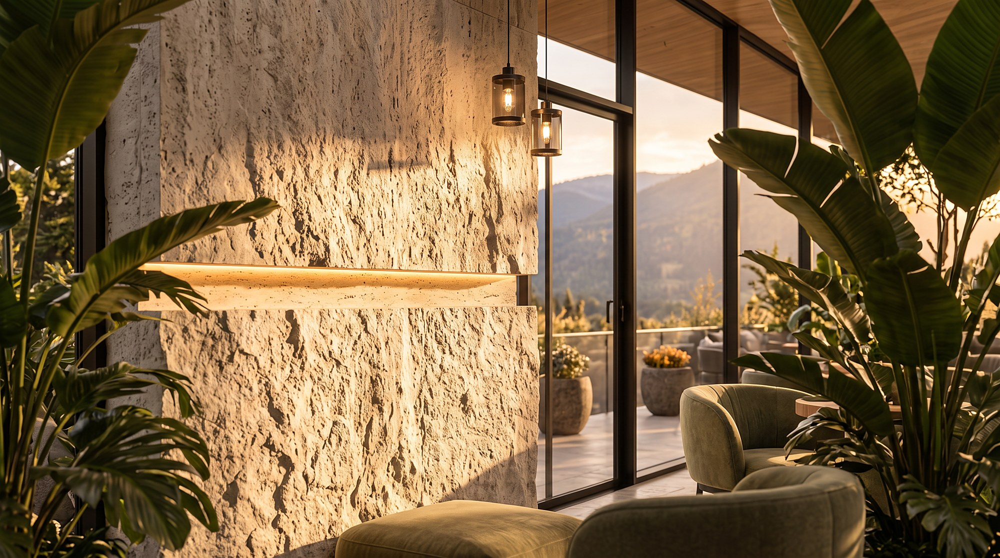
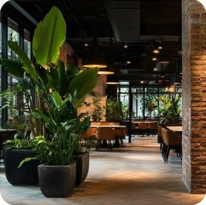
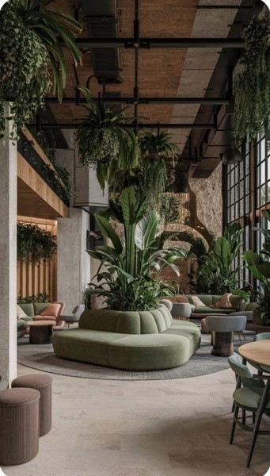
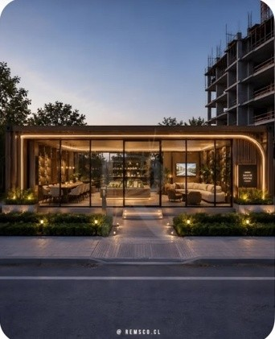
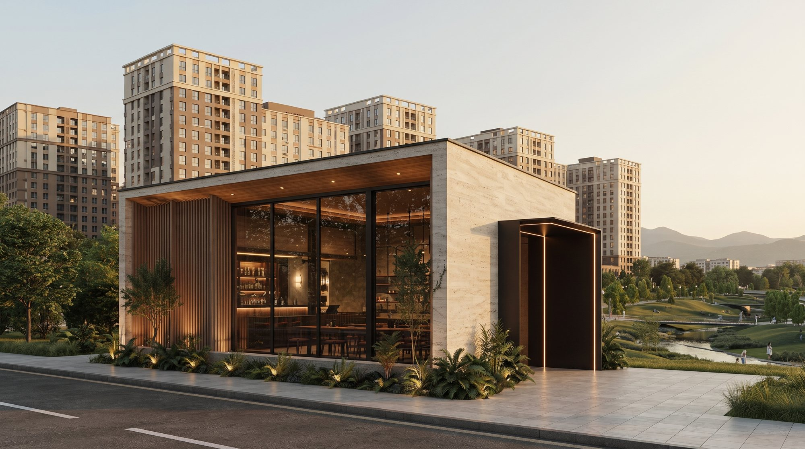
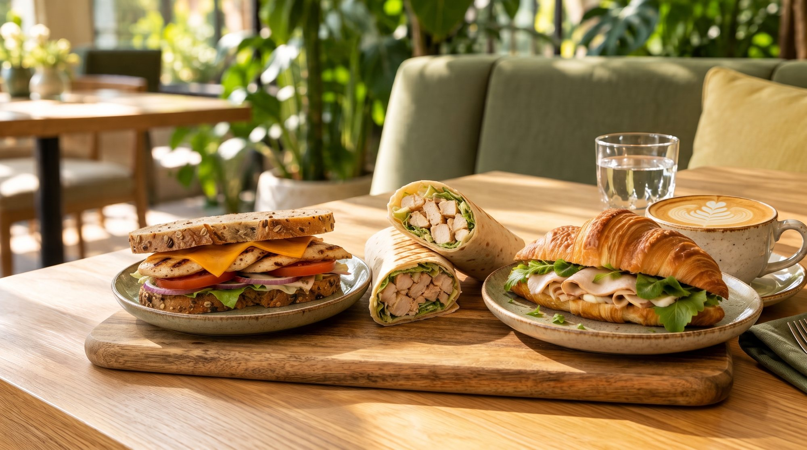
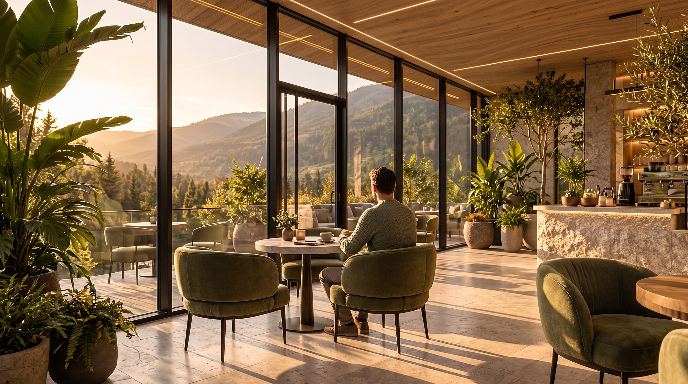
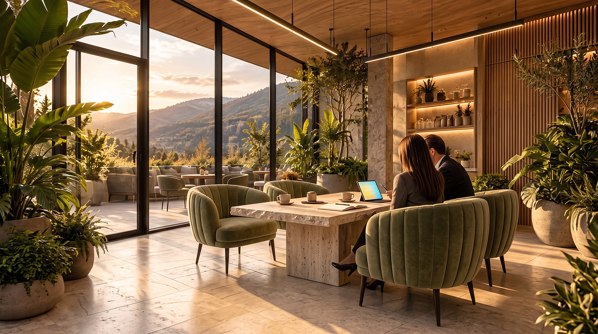
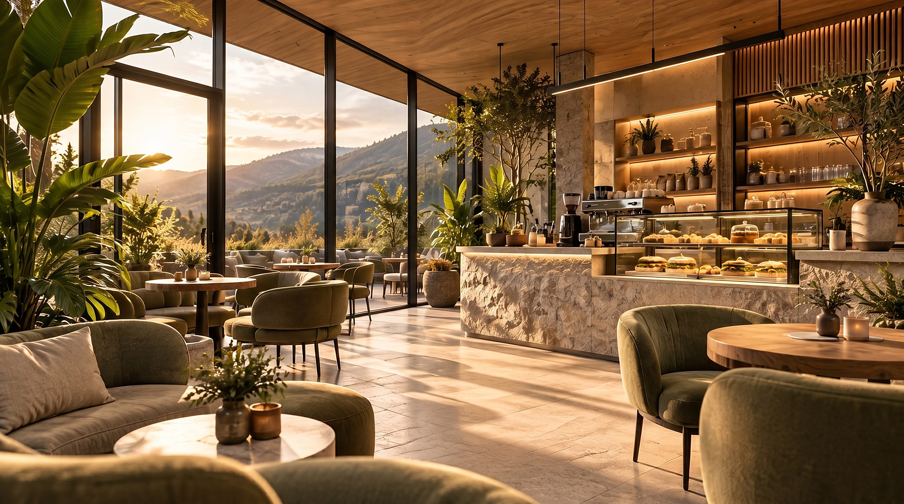
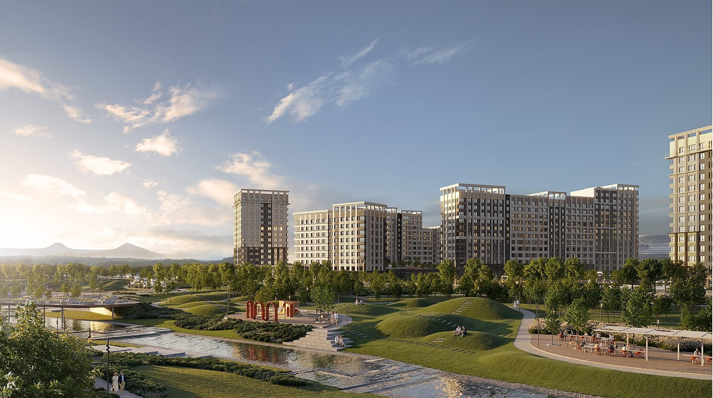

Для местных жителей
Приехать на кофе или встречу. Открыть для себя новое место и познакомиться с территорией.

Нагория · отдел продаж
Концепция пространства для сотрудников и гостей.
Идея
Рядом пока нет кафе или другой точки питания.
¹ По данным инициатора. Число сотрудников на территории ежедневно требует уточнения.

Приехать на кофе или встречу. Открыть для себя новое место и познакомиться с территорией.
Гости кофейни узнают о проекте и могут заинтересоваться покупкой недвижимости в Нагории.
Сотрудники получают питание рядом. Гости могут спокойно подождать встречи и перекусить.
Кофейня помогает почувствовать атмосферу будущей жизни в жилом комплексе.
Хороший кофе, встречи и уют дают повод приезжать снова.
Новые гости открывают Нагорию и узнают о возможностях покупки.

Образ
Крупная зелень.
Мягкие природные оттенки.
Стекло и тёплый свет.










Сотрудники и гости
Кофе перед работой. Быстрый завтрак или еда с собой.
Сытное горячее и суп. Предзаказ и выдача в удобный интервал.
Кофе и перекус между встречами. Покупка у стойки. Для регулярных покупок важны доступная цена, разнообразие обедов и быстрая выдача. 90 человек в штате не означают 90 покупателей в день, ежедневное присутствие требует уточнения.
Кофе до или после консультации. Десерт, сэндвич или салат во время ожидания. Для гостей с детьми: какао, сырники, выпечка.
Напитки к согласованному времени. Небольшие наборы для переговоров. Предзаказ помогает обслужить несколько гостей без очереди.
Жители и посетители инфраструктуры появятся по мере развития территории. Их поток пока не закладываем.
Пространство
12–16 посадочных мест. Небольшие столы на двоих и места для короткого посещения. Витрина хорошо видна от входа.
Предварительное распределение площади. Вместимость зависит от планировки и инженерных условий.

Еда на каждый день
Меню по двухнедельному циклу
Кофе, сырники или свежая выпечка
Горячее с гарниром и суп дня
Сэндвич, салат или десерт
Целевые диапазоны для расчёта. Итоговый прайс зависит от себестоимости и бюджета сотрудников.
Производство
Внешнее производство и подготовка к подаче на месте.
Готовит обеды, супы, сырники, салаты и начинки. Формирует порции по согласованному меню.
Продукция поступает по согласованному графику. Для каждого блюда определяем перевозку и хранение.
Готовим напитки, разогреваем блюда и оформляем подачу перед выдачей.
Производственная база: действующая оборудованная кухня или отдельный поставщик готовых блюд.
До 10:30 — предзаказ на день. Сотрудник выбирает блюдо и удобный интервал выдачи. 2 горячих блюда на выбор. Небольшой запас в свободной продаже, объём поставки корректируем по заказам и списаниям.
Время предзаказа предварительное. Корпоративную компенсацию питания обсуждаем с работодателем.Сырое мясо и рыбу обрабатывает внешняя кухня. Сложные заготовки и большой горячий цех на точке не предусматриваем.
Допустимые операции, оборудование, сроки хранения и планировку подтверждает технолог.2 сотрудника в обеденный пик: бариста-кассир и сотрудник разогрева и выдачи.
3–5 минут — ориентир для кофе. 5–7 минут — ориентир для горячего обеда.
График привязан к отделу продаж. Скорость выдачи проверяем на тестовом запуске.